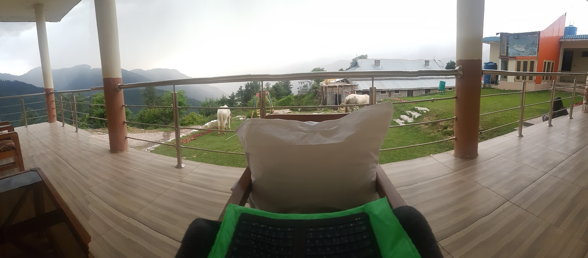

고작 100원을 깎기 위해 목숨을 거는 이유
2017년 06월 09일
파키스탄
일어나서 책도 읽고 콘플레이크와 꿀 토마토 등으로 일기를 쓰고 있었는데 시피르가 테라스로 걸어왔다. 본인이 카와이에 가는데 3시간 정도 자리를 비울거라고 한다. 나는 그동안 무료한 인생을 더 재미있는 방향으로 흐르게 만드는 약간의 감을 키웠다. 계획하지 않았던 사건속으로 살짝 발만 담가보는 것이다. 그 뒤 펼쳐질 사건은 내가 상상할 수 도없이 새로운 일들이 일어나게 된다.
사피르가 말한 순간이 그 기회였다. 그때 따라가야 한다. 그러면 무엇이 될지 모르겠지만 재미있는 일들이 마구 펼쳐질 것이다. 그동안 여행을 통해 예기치 못했던 재미있는 일들이 계속 펼쳐지는 경험을 했다. 내가 여행을 통해 배운것은 그런 경험을 더 많이 느낄수 있는 행동이다. 새로운 경험이 있다면 과감히 뛰어들면 된다. 그 뒤 어떤 일이 일어날지 모른다. 나는 그래서 카와이에 따라가기로 했다.
사람들이 카와이에 내려갈때 1500루피라고 하더니 현지인과 내려가니까 200루피밖에 하지 않는다. 나중에 이슬라마바드로 갈때 이 코스를 이용해야 겠다. 카와이에 도착할 즘. 나는 내려온 김에 발랑콧에가서 ATM에서 현금을 뽑으면 좋겠다는 생각을 했다. 현금이 다 떨어져서 쇼그란에서 좀더 오래 머물수 없는 상황이 되었기 때문이다. 첫째날 5000루피가 남았는데 하루 2천 루피정도 사용한다고 치면 2일밖에 못있는다. 그렇게 말했더니, 사피르가 같이 가주기로 했다. 발랑콧은 이곳으로부터 40분 정도 거리에 있는곳이다. 사피르가 1000루피 짜리 왕복 택시를 잡아줬지만 거절했다. 천루피면 하루 방값이다. 그럴바에는 그냥 쇼그란에서 하루 더 머물고 체크아웃을 하고 말지. 지나가는 스즈키가 보이길래 잡았다. 발랑콧에 가는지 물어봤더니 간다고 한다. 가격은 50루피.. 20분의 1가격으로 발랑콧에 갈 수 있다. 엄청난 비용절감에 성공했다.
스즈키를 타고 가는길에 갑자기 안나푸르나에서 만났던 7년짜리 여행자 친구가 떠올랐다. 그녀는 계획하지 않는다 지금 이순간에 만족하고 머물려고 한다는 것이 인상에 깊었는지 떠올랐다. 어떤것이 정답인지 잘 모르겠다. 나는 요즘들어 여행을 마친 뒤 뭘 못하겠냐는 자신감에 취해있다. 그래서 여행이 끝나고 과감하게 사표를 내고 새로운 것에 도전할 상상을 한다. 여행이 끝나면 나는 삶에 대해 더 많이 배울 것이고 예기치 못한 사건들속으로 뛰어들때 즐거움을 느끼는법을 더 많이 배울 것이다. 생각해보면 이 모든것이 앞으로 더 나은 나의 모습을 만들기 위해서다. 그러니까 나는 미래를 위해 여행한다. 지금 경험하는 것들은 모두 미래를 위해 창고에 저장되는 기억일 뿐이다. 그때 만난 친구 처럼 그냥 현재에만 만족할 순 없을까. 미래에 대한 지나친 생각은 불안을 낳는다. 하지만 그렇다고 미래에 대해 아무런 생각없이 살수도 없다. 잘 모르겠다. 어떤게 정답인지.
발랑콧은 생각보다 엄청 큰 마을이었다. 나는 발랑콧에서 조금더 구경하고 싶었지만 사피르는 빨리 돌아가야하는지 시간이 없다고 했다. (나중에 알고보니 1주일에 한번씩하는 가장 큰 예배에 참석하려고 카와이에 가려고 했던거였다. 그걸 미루고 나와 동행해준 것이다.) 가는길에 케밥이 보이길래 바로 구매했다. 라마단 기간 점심시간에 음식이 보이면 바로 사먹어야한다. 언제 또 음식이 보일지 모른다. ATM을 발견하고 바로 돈을 뽑았다. 해방감이 느껴졌다. 케밥을 어디 구석에가서 먹은뒤 300짜리 택시를 타고 돌아왔다. 나 혼자였으면 아마 더 저렴하게 왕복했을지도 모르나 시간이 없다길래 돌아 갈수 밖에 없었다. 이곳 사람들의 특이한 점은 어딜가나 아는사람이 있고 친구가 있다는 것이다. 발랑콧은 쇼그란과 거리가 꽤 되는데도 길에서 아무나 만나도 친구였다. 다른지역에서도 비슷한 경험을 했다. 파키스탄 사람들은 상대방에 대해서 더 호의적인것 같다. 쉽게 친구가 되기도 쉽다.
다시 카와이에 도착했을때 예배가 끝나고 많은 사람들이 모스크에서 나왔다. 나는 다시 카와이로 올라가는 지프를 기다렸는데 200루피라고 했다. 비싸다 비싸다. 교통비로만 거의 천 루피 가까이 사용하게 생겼다. 그러나다 레마한 아저씨를 만났다. 여기서 보니 또 반가웠다. 레마한 아저씨가 친절하게도 쇼그란까지 본인차로 태워준다고 하신다! 또 한번의 비용절감 ㅜ 감동.
물가가 싼 나라를 여행할때 100원을 깎기위해 목숨을 거는 이유
카와이가 물값이 더 쌀것 같아서 가게에 갔지만 물이 70루피 라길래 안샀다. 쇼그란은 60루피였기 때문이다. 10루피 차이면 한국돈으로 100원차이다. 이곳에서는 고작 100원 깎으려고 흥정하고 난리를 치게 된다. 곰곰히 생각해봤다. 왜 현지에 와서 얼마안하는 돈으로 이런 난리를 치게 될까? 그것은 현지 가격에 적응을 하기 때문이다. 그 돈 100원이면 이곳에서 할수 있는 것이 많다. 한국에서 100원으로 할수 있는일은 없다. 그래서 한국에서는 100원차이는 아무것도 아니게 된다. 하지만 이곳에서 100원으로 상당히 많은것들을 할수 있다. 그것이 현지 가격에 민감해지게 되는 이유다.
쇼그란으로 올라가는 길. 자칫하가다는 점점 호의를 권리로 생각하게 될 것 같았다. 그들의 호의를 당연하게 받아 들이지 말자. 조심해야할것 같다. 기본적으로 내 스스로 생존해야한다. 내가 돈을 지불해야한다. 적어도 구걸은 하지 말자. 적어도 내가 먼저 요청은 하지 말자. 호의는 요청해서 받는게 아니라 요청이 없는데도 받는것이다.
어느순간 이슬람이라는 개념이 내 삶에 훅 들어왔다. 내가 바라보는 세계가 이제 이슬람이 큰 축을 담당한다. 그도 그럴것이 전세계 1/4 은 무슬림이다. 이들을 이해하지 않고서는 이 세계와 인간을 이해할 수 없다.
저녁 식사를 하러 밖에 나갔다. 오늘은 라마한에게 연락이 안왔다. 오늘은 돈을 지불하고 직접 저녁식사를 해야한다. 돌아다니다가 어떤 친구가 불러서 식사를 또 대접받았다. 주네르라는 친구였다. 식사를 마친뒤 자꾸 방에 오라고 해서 잠깐 산책을 하고 방으로 갔다. 이친구는 자꾸 이슬람으로 나를 개종시키려고 노렸했다. 다른 생각을 말하면 쯧쯧거렸다. 그 습관이 상당히 거북하게 느껴졌다. 파키스탄에 와서 처음으로 교조적인 무슬림을 만났다. 불편했다. 하지만 어딜가나 좌우 성향의 다양한 스펙트럼이 있는법이다.
이 친구는 약간 이슬람 근본주의 느낌이 나서 대화가 별로 즐겁지 못했다. 지금까지 무슬림과는 결이 조금 다르다고 생각했다. 게다가 지금 읽고 있는 책을 통해 이슬람 근본주의의 위험성에 대해서 느끼고 있기 때문에 좀 더 불편하게 다가왔던것 같다. 이름은 주네드. 그래도 나를 부라더 라고 부르며 나를 엄청 좋아하고 잘 대해준 친구다. 덕분에 다양한 스팩트럼의 무슬림을 더욱 경험할수 있게 된것 같다.

지금 묶고 있는 호텔의 아침 풍경. 일기를 쓰고있는 중.